6 6 Axis Systems and Transformations**
6.1 Earth Axis Systems
6.2 Aircraft Axis Systems
Body, Stability, Wind, Principle
6.3 Euler Angles
6.4 Flight Path Angles
6.5 Axis System Transformations
Earth-to-Body, Body-to-Earth
6.6 References
6.1 Earth Axis Systems (ref 6.6.1)
Both fixed-Earth and moving-Earth axis systems keep constant orientation with respect to the Earth. The Z-axis point towards the center of the Earth.
• The origin of a fixed-Earth system does not move relative to the Earth. (such as a ground radar site)
• The origin of a moving Earth system does not move relative to its host (such as an aircraft inertial reference unit) .
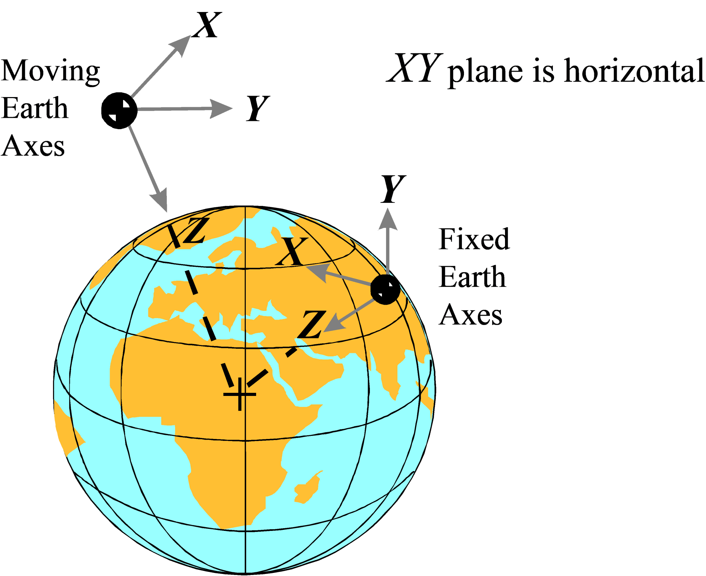
6.2 Aircraft Axis Systems (ref 6.6.2)
• The body axis system originates at the aircraft’s reference center of gravity. The +xb direction is towards the front, the +yb direction is towards the right wing tip, and the +zb direction is towards the bottom of the aircraft.
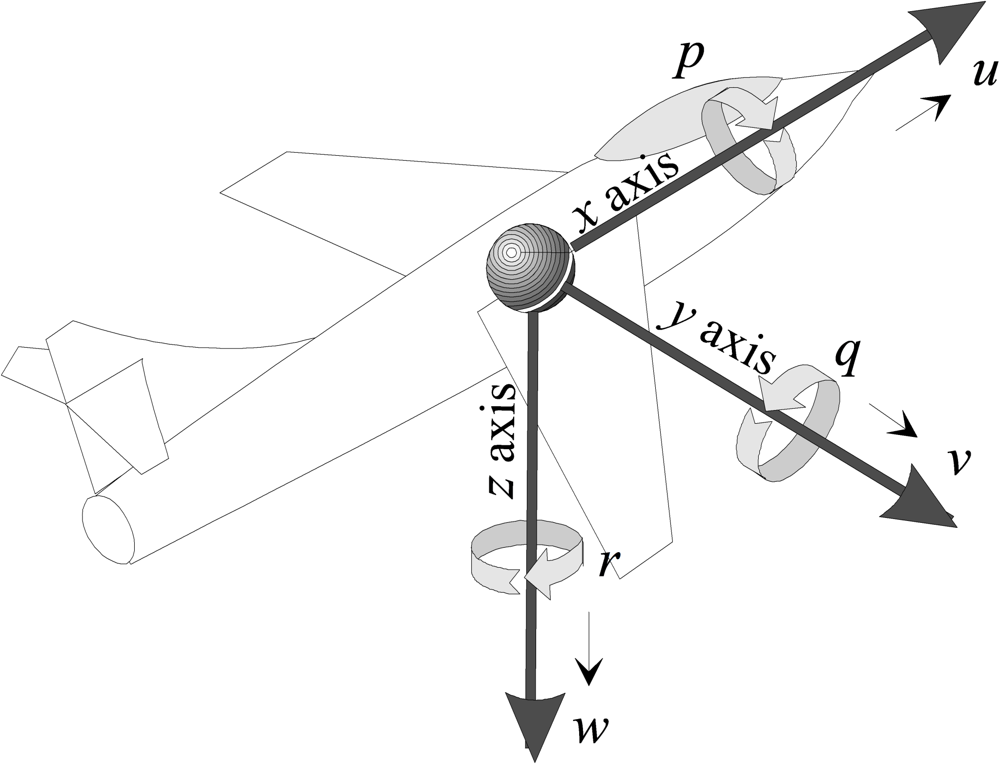
• The stability axis system is similar to the body axis system except that it is rotated about the y-axis through the angle of attack (α)
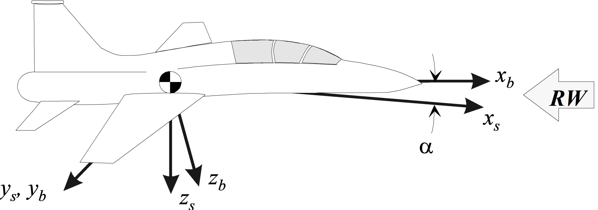
Forces, velocities or accelerations along the stability axes are related to the body axes as follows
xb = xs cos α − zs sin α
zb = zs cos α + xs sin α
yb = ys
For cases where the z axis is defined positive upward (typical for normal-axis accelerometers)
xb = xs cos α + zs sin α
zb = zs cos α - xs sin α
• The wind axis system is similar to the stability axis system except it is rotated about the zs axis through the angle of sideslip (β).
The term “wind” refers to the fact that the freestream relative wind approaches the aircraft directly along the xw axis. This dictates that the true airspeed also lies along the xw axis.
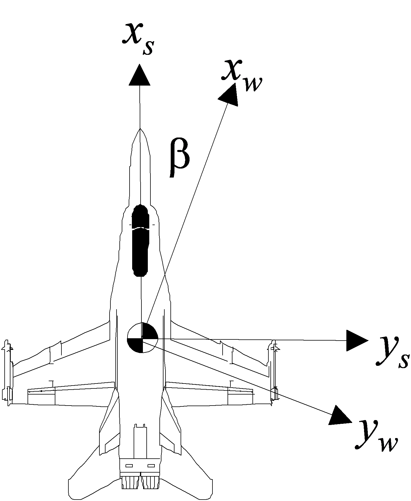
Forces, velocities or accelerations along the wind axes are related to the stability axes as follows
xs = xw cos β − yw sin β
ys = yw cos β + xw sin β
zs = zw
The geometric relations between body, stability and wind axis velocities are illustrated here.
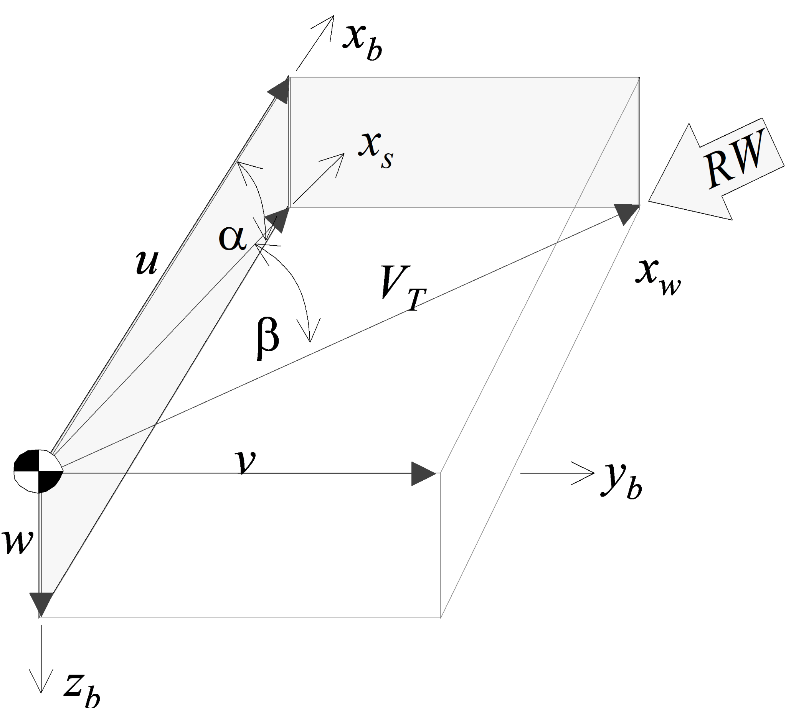
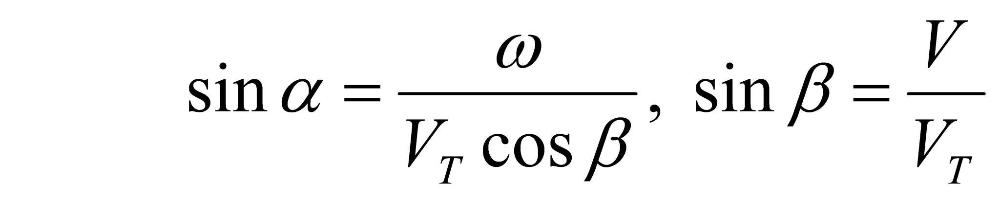
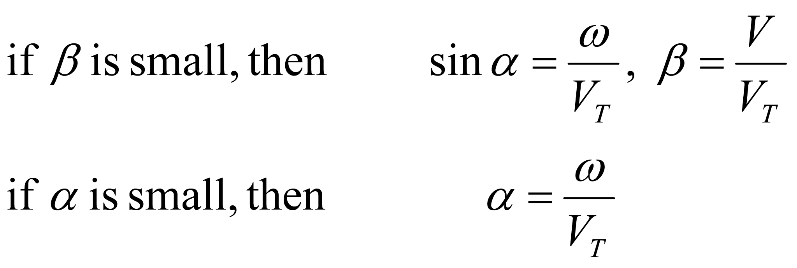
Most aircraft sideslip vanes do not measure β directly. They measure the flanking angle, which is the projection of the relative wind into the aircraft’s x-y plane. The difference between these two angles increases with angle of attack. Ignoring upwash, boom bending, and body axis rate corrections, calculate true sideslip as a function of vane α and β as follows:
βtrue = tan-1 \[ tan(β~vane~ ) cosα \]
• Wind-Body Axis Transformations (ref 6.6.1)
Combining the two previous transformations, forces, velocities or accelerations along the wind axes are related to the body axes as follows
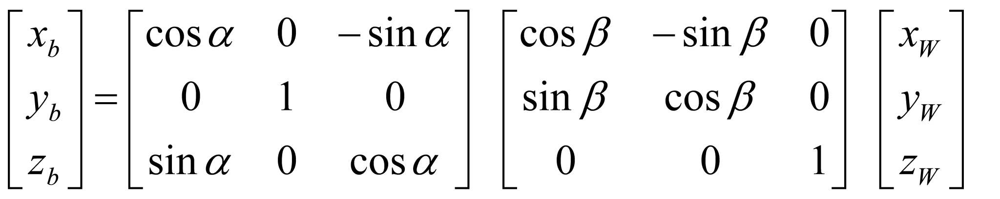
After expansion, xb = cosα (xwcosβ – ywsinβ) - zwsinα
yb = xwsinβ + ywcosβ
zb = sinα (xwcosβ – ywcosβ) + zwcosα
The inverse transform, converting from the body to the wind axis system is
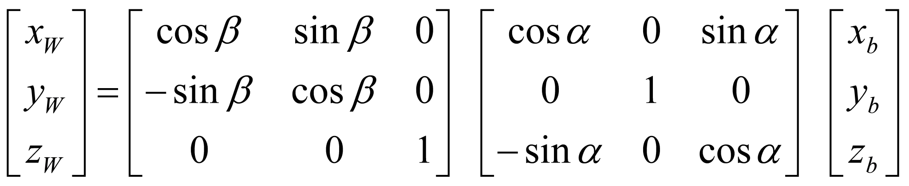
After expansion,
xw = cosβ (xbcosα + zbsinα) + ybsinβ
yw = -sinβ (xbcosα+zbsinα)+ ybcosβ
zw = -xbsinα + zbcosα
Note that these equations apply to the sign convention with z+ down. If sign convention (and instrumentation calibration) use z+ upward, then the above equations become:
xw = cosβ(xbcosα - zbsinα) + ybsinβ
yw = –sinβ(xbcosα + zbsinα) + ybcosβ
zw = xbsinα + zbcosα
• The Principle axes are those about which the products of inertia are zero. They can be equated to the axis of “dumbells” which represent concentrated mass elements. Neglecting aerodynamic and gyroscopic effects, an aircraft rotating about one of its principle axes will not tend to cross-couple into motion about any other axis.
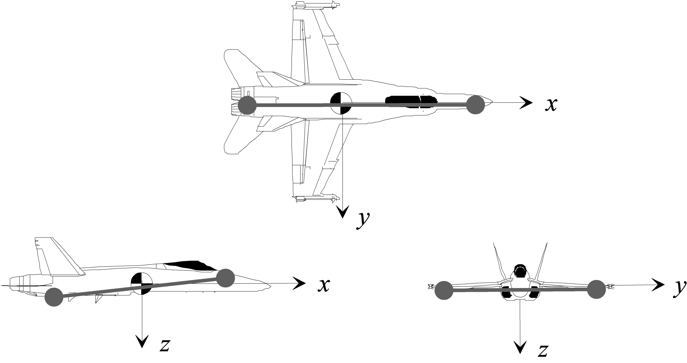
Wind to Body Axes Matrix Transformation
6.3 Euler Angles (ref 6.6.1)
Euler angles are expressed as yaw, pitch, and roll. The sequence: first yaw, then pitch, then roll; must be maintained to arrive at the proper orientation angles. The Euler angles are defined as follows:
ψ ≡ Yaw Angle: The angle between the projection of the vehicle xb- axis onto the horizontal reference plane and some initial reference position of the Earth x-axis. Yaw angle equals the vehicle heading only if the initial reference is North.
θ ≡ Pitch angle (in vertical plane) between xb and horizon.
φ ≡ Bank angle, the angle (measured in the y-z plane of the body-axis system) between the y-axis and the horizontal reference plane. Also known at the roll angle, it is a measure of the rotation (about the x-axis) to return the aircraft to a wings level condition.
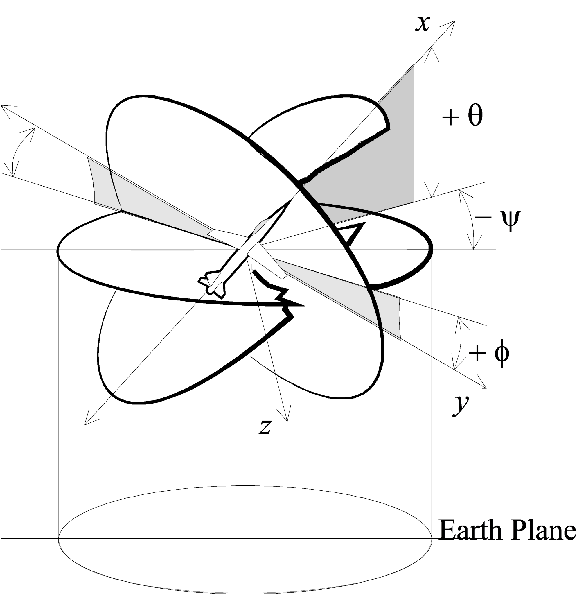
6.4 Flight Path Angles (ref 6.6.3)
Just as the Euler angles define the attitude of the aircraft with respect to the Earth, three flightpath angles describe the vehicle's cg trajectory relative to the Earth (not the air mass).
σ = Flight path heading angle; also known as ground track heading, is the horizontal angle between some reference direction (usually North) and the projection of the velocity vector on the horizontal plane. Positive rotation is from North to East.
γ = Flightpath elevation angle; the vertical angle between the flightpath and the horizontal plane. Positive rotation is up. During a descent, this parameter is commonly known as glide path angle.
μ = Flightpath bank angle; the angle between the plane formed by the velocity vector and the lift vector and the vertical plane containing the velocity vector. Positive rotation is clockwise about the velocity vector, looking forward.
The first two parameters above are easily measured using ground-based radar, or onboard GPS or inertial reference systems. If only α, β, and the Euler angles are available, then assuming zero winds, the flightpath angles can be calculated as
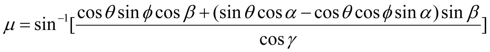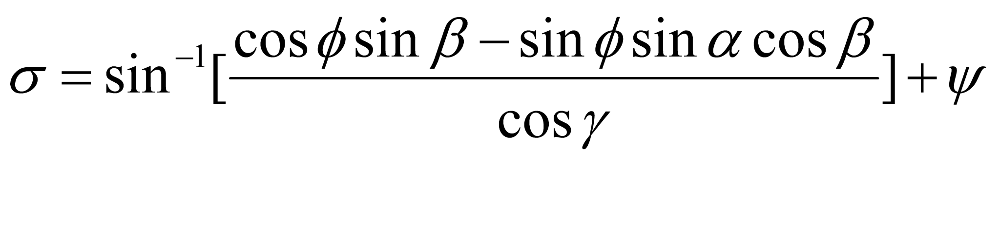 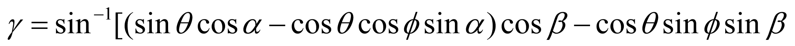
Technically, the above equations describe the velocity vector (angles relative to the air mass). If the air mass is moving relative to the Earth, as is usually the case, the above equations do not describe the flight path.
Editor’s note: not knowing the difference between flightpath and velocity vector angles can cause considerable confusion when analyzing data from different sources.
6.5 Axis System Transformations (ref 6.6.2)
Transformation matrix for converting forces, velocities or accelerations from inertial (X, Y, Z) to body (x, y, z) axes
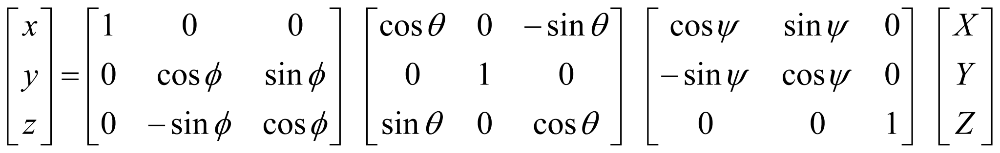
Expanding gives:
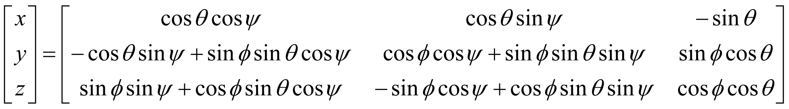
The inverse of the above transform matrix converts
from the body axis to the inertial axis coordinate system
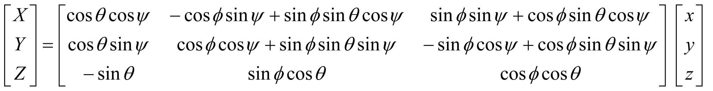
Acceleration Transformations
• Convert body-axis angular rates & linear accelerations into total
accelerations along body axes.
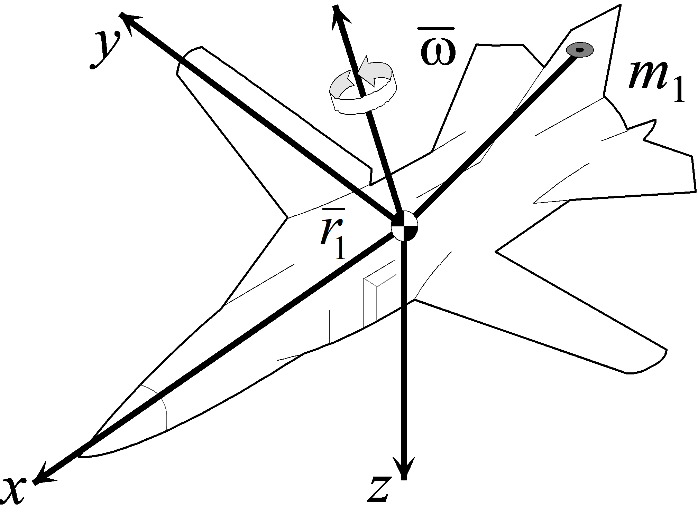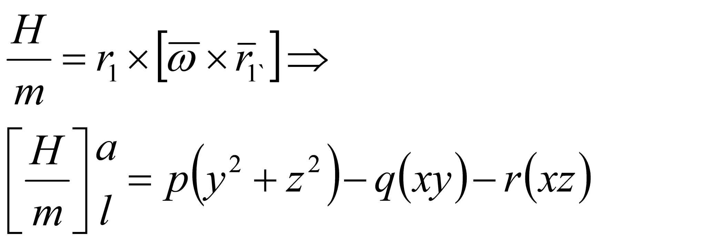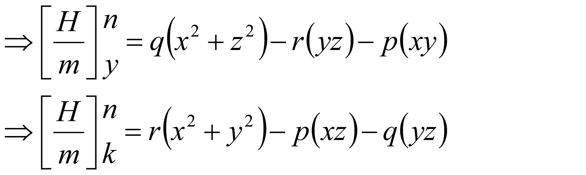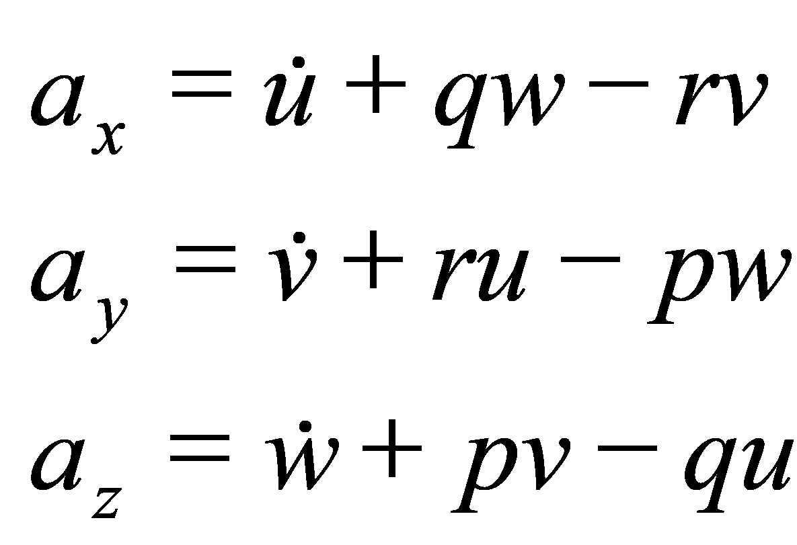• Convert element (m1) location & rates into specific angular momentum
Transformations between body axis rates and Euler angle rates
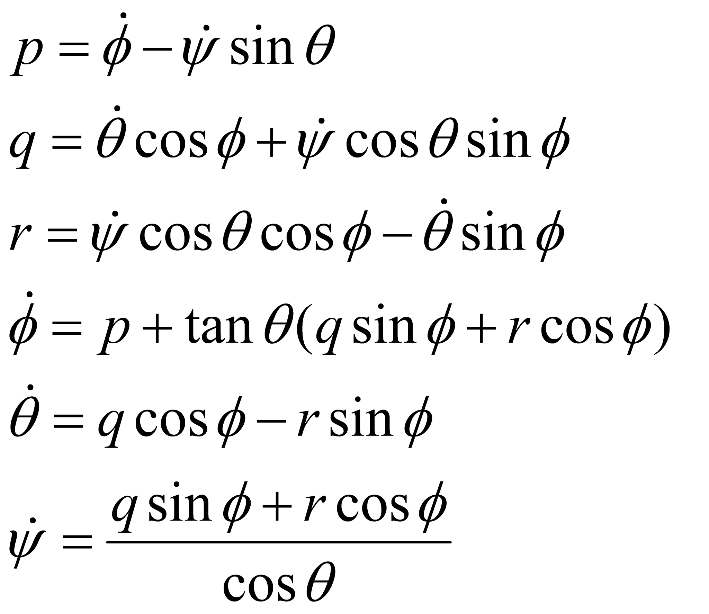
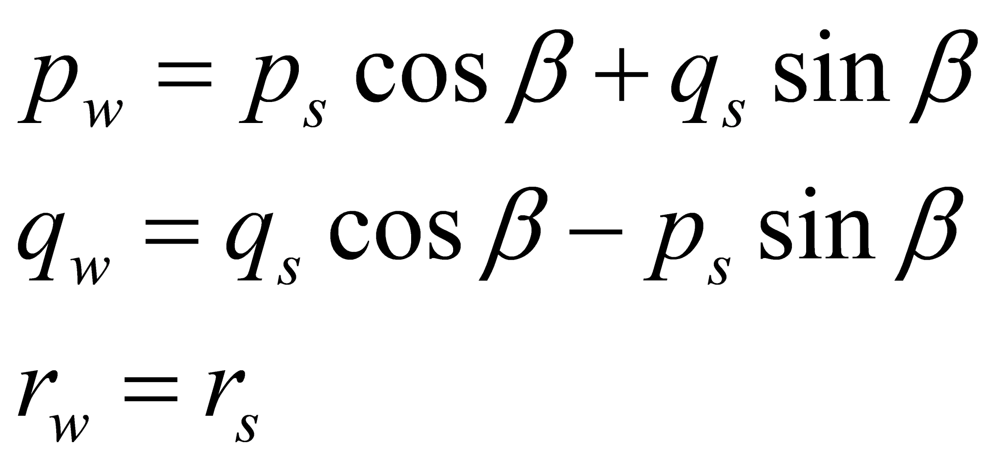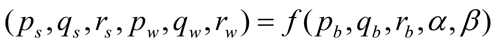 Transformations from Euler & aerodynamic angles to the aircraft stability and wind axis angular rates. Subscripts b, s, and w denote the body, stability and relative wind axis systems.
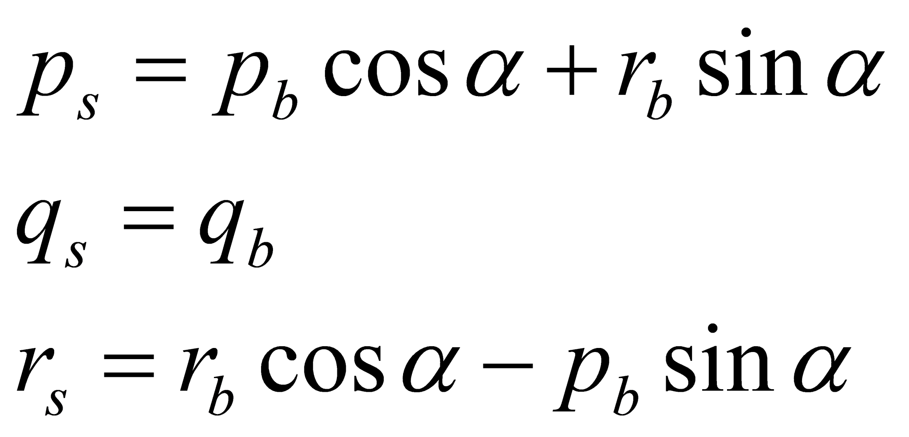
Transformations from Euler angles to the three aircraft axis angular accelerations (ref 6.6.3)
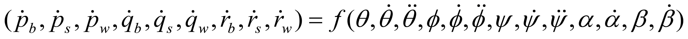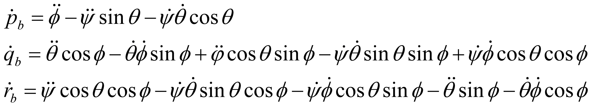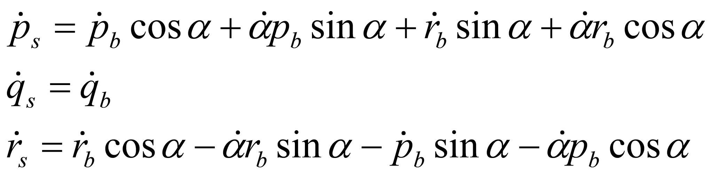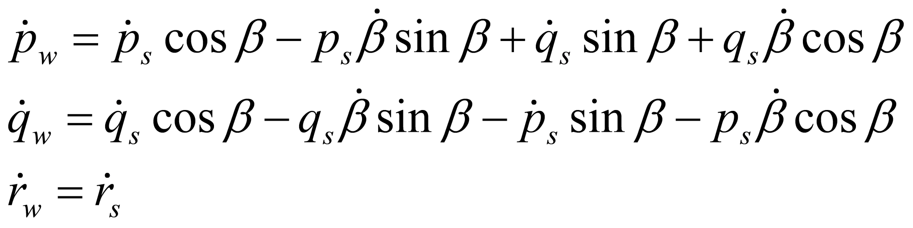
6.6 References
6.6.1 Lawless, Alan R., Math and Physics for Flight Testers “Chapter 7, Axis Systems and Transformations”, National Test Pilot School, Mojave CA, 1998.
6.6.2 Anon., Aircraft Flying Qualities, Chapter 4, Equations of Motion, USAF TestPilot School notes, AFFTC Edwards AFB CA, March 1991.
6.6.3 Kalviste, Juri, Flight Dynamics Reference Handbook, Northrop Corp. Aircraft Division, April 1988.